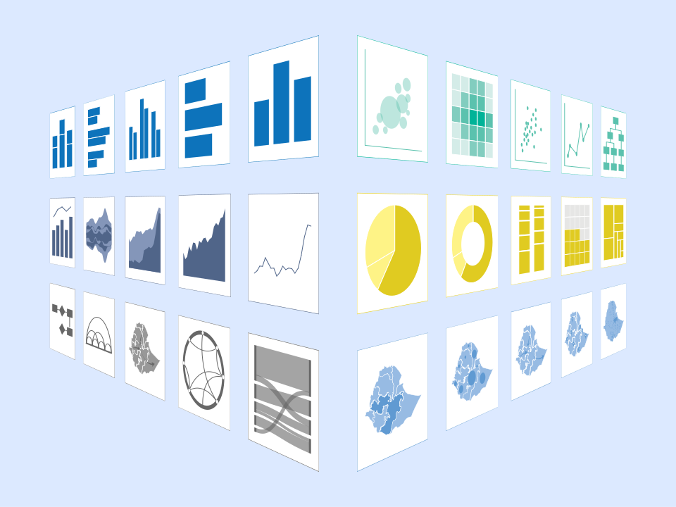

Chart gallery
Finding the most effective way to showcase your data and convey your message can be a daunting task. In the chart gallery you can browse through different chart options and find suitable options for the type of data you have and the attributes and relationships you want to highlight.
See more
General guidance
The UNHCR Data Visualization Guidelines are practical easy-to-follow guidance which will ensure your charts and graphics are professional, clear, and brand–compliant.
See more
Tools
To support UNHCR staff to create high-quality brand-compliant charts and graphics, GDS created a number of tools, templates and scripts. You can find useful tools to support your data visualization using Excel, Power BI, Adobe Illustrator, R, Python, D3, and for GIS.
See more